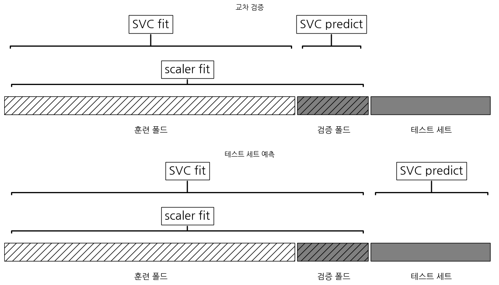
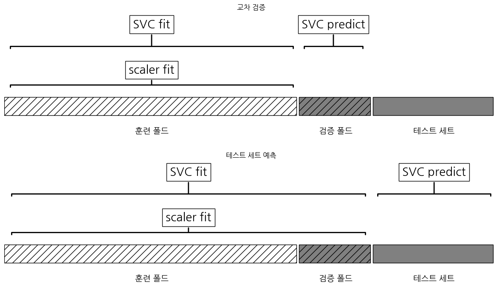
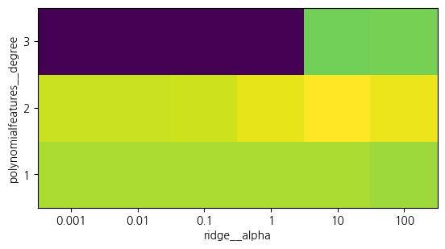

import sklearn
from preamble import *
import matplotlib.pyplot as plt
import koreanize_matplotlib알고리즘 체인과 파이프라인
알고리즘 체인과 파이프라인
이 노트북은 맷플롯립 그래프에 한글을 쓰기 위해 나눔 폰트를 사용합니다. 코랩의 경우 다음 셀에서 나눔 폰트를 직접 설치합니다.
from sklearn.svm import SVC
from sklearn.datasets import load_breast_cancer
from sklearn.model_selection import train_test_split
from sklearn.preprocessing import MinMaxScaler
# 데이터 적재와 분할
cancer = load_breast_cancer()
X_train, X_test, y_train, y_test = train_test_split(
cancer.data, cancer.target, random_state=0)
# 훈련 데이터의 최솟값, 최댓값을 계산합니다
scaler = MinMaxScaler().fit(X_train)# 훈련 데이터의 스케일을 조정합니다
X_train_scaled = scaler.transform(X_train)
svm = SVC()
# 스케일 조정된 훈련데이터에 SVM을 학습시킵니다
svm.fit(X_train_scaled, y_train)
# 테스트 데이터의 스케일을 조정하고 점수를 계산합니다
X_test_scaled = scaler.transform(X_test)
print("테스트 점수: {:.2f}".format(svm.score(X_test_scaled, y_test)))테스트 점수: 0.97데이터 전처리와 매개변수 선택
from sklearn.model_selection import GridSearchCV
# 이 코드는 예를 위한 것입니다. 실제로 사용하지 마세요.
param_grid = {'C': [0.001, 0.01, 0.1, 1, 10, 100], 'gamma': [0.001, 0.01, 0.1, 1, 10, 100]}
grid = GridSearchCV(SVC(), param_grid=param_grid, cv=5)
grid.fit(X_train_scaled, y_train)
print("최상의 교차 검증 정확도: {:.2f}".format(grid.best_score_))
print("테스트 점수: {:.2f}".format(grid.score(X_test_scaled, y_test)))
print("최적의 매개변수: ", grid.best_params_)최상의 교차 검증 정확도: 0.98
테스트 점수: 0.97
최적의 매개변수: {'C': 1, 'gamma': 1}mglearn.plots.plot_improper_processing()
파이프라인 구축하기
from sklearn.pipeline import Pipeline
pipe = Pipeline([("scaler", MinMaxScaler()), ("svm", SVC())])pipe.fit(X_train, y_train)Pipeline(steps=[('scaler', MinMaxScaler()), ('svm', SVC())])In a Jupyter environment, please rerun this cell to show the HTML representation or trust the notebook. On GitHub, the HTML representation is unable to render, please try loading this page with nbviewer.org.
Pipeline(steps=[('scaler', MinMaxScaler()), ('svm', SVC())])MinMaxScaler()
SVC()
print("테스트 점수: {:.2f}".format(pipe.score(X_test, y_test)))테스트 점수: 0.97그리드 서치에 파이프라인 적용하기
param_grid = {'svm__C': [0.001, 0.01, 0.1, 1, 10, 100],
'svm__gamma': [0.001, 0.01, 0.1, 1, 10, 100]}grid = GridSearchCV(pipe, param_grid=param_grid, cv=5)
grid.fit(X_train, y_train)
print("최상의 교차 검증 정확도: {:.2f}".format(grid.best_score_))
print("테스트 세트 점수: {:.2f}".format(grid.score(X_test, y_test)))
print("최적의 매개변수:", grid.best_params_)최상의 교차 검증 정확도: 0.98
테스트 세트 점수: 0.97
최적의 매개변수: {'svm__C': 1, 'svm__gamma': 1}mglearn.plots.plot_proper_processing()
rnd = np.random.RandomState(seed=0)
X = rnd.normal(size=(100, 10000))
y = rnd.normal(size=(100,))from sklearn.feature_selection import SelectPercentile, f_regression
select = SelectPercentile(score_func=f_regression, percentile=5).fit(X, y)
X_selected = select.transform(X)
print("X_selected.shape:", X_selected.shape)X_selected.shape: (100, 500)from sklearn.model_selection import cross_val_score
from sklearn.linear_model import Ridge
print("교차 검증 점수 (릿지): {:.2f}".format(
np.mean(cross_val_score(Ridge(), X_selected, y, cv=5))))교차 검증 점수 (릿지): 0.91pipe = Pipeline([("select", SelectPercentile(score_func=f_regression,
percentile=5)),
("ridge", Ridge())])
print("교차 검증 점수 (파이프라인): {:.2f}".format(
np.mean(cross_val_score(pipe, X, y, cv=5))))교차 검증 점수 (파이프라인): -0.25파이프라인 인터페이스
def fit(self, X, y):
X_transformed = X
for name, estimator in self.steps[:-1]:
# 마지막 단계를 빼고 fit과 transform을 반복합니다
X_transformed = estimator.fit_transform(X_transformed, y)
# 마지막 단계 fit을 호출합니다
self.steps[-1][1].fit(X_transformed, y)
return selfdef predict(self, X):
X_transformed = X
for step in self.steps[:-1]:
# 마지막 단계를 빼고 transform을 반복합니다
X_transformed = step[1].transform(X_transformed)
# 마지막 단계 predict을 호출합니다
return self.steps[-1][1].predict(X_transformed)파이프라인 그리기
from sklearn import set_config
set_config(display='diagram')
pipePipeline(steps=[('select',
SelectPercentile(percentile=5,
score_func=<function f_regression at 0x0000018AD9E7C7C0>)),
('ridge', Ridge())])In a Jupyter environment, please rerun this cell to show the HTML representation or trust the notebook. On GitHub, the HTML representation is unable to render, please try loading this page with nbviewer.org.
Pipeline(steps=[('select',
SelectPercentile(percentile=5,
score_func=<function f_regression at 0x0000018AD9E7C7C0>)),
('ridge', Ridge())])SelectPercentile(percentile=5,
score_func=<function f_regression at 0x0000018AD9E7C7C0>)Ridge()
make_pipleline을 사용한 파이프라인 생성
from sklearn.pipeline import make_pipeline
# 표준적인 방법
pipe_long = Pipeline([("scaler", MinMaxScaler()), ("svm", SVC(C=100))])
# 간소화된 방법
pipe_short = make_pipeline(MinMaxScaler(), SVC(C=100))print("파이프라인 단계:\n", pipe_short.steps)파이프라인 단계:
[('minmaxscaler', MinMaxScaler()), ('svc', SVC(C=100))]from sklearn.preprocessing import StandardScaler
from sklearn.decomposition import PCA
pipe = make_pipeline(StandardScaler(), PCA(n_components=2), StandardScaler())
print("파이프라인 단계:\n", pipe.steps)파이프라인 단계:
[('standardscaler-1', StandardScaler()), ('pca', PCA(n_components=2)), ('standardscaler-2', StandardScaler())]단계 속성에 접근하기
# cancer 데이터셋에 앞서 만든 파이프라인을 적용합니다
pipe.fit(cancer.data)
# "pca" 단계의 두 개 주성분을 추출합니다
components = pipe.named_steps["pca"].components_
print("components.shape:", components.shape)components.shape: (2, 30)그리드 서치 안의 파이프라인의 속성에 접근하기
from sklearn.linear_model import LogisticRegression
pipe = make_pipeline(StandardScaler(), LogisticRegression(max_iter=1000))param_grid = {'logisticregression__C': [0.01, 0.1, 1, 10, 100]}X_train, X_test, y_train, y_test = train_test_split(
cancer.data, cancer.target, random_state=4)
grid = GridSearchCV(pipe, param_grid, cv=5)
grid.fit(X_train, y_train)GridSearchCV(cv=5,
estimator=Pipeline(steps=[('standardscaler', StandardScaler()),
('logisticregression',
LogisticRegression(max_iter=1000))]),
param_grid={'logisticregression__C': [0.01, 0.1, 1, 10, 100]})In a Jupyter environment, please rerun this cell to show the HTML representation or trust the notebook. On GitHub, the HTML representation is unable to render, please try loading this page with nbviewer.org.
GridSearchCV(cv=5,
estimator=Pipeline(steps=[('standardscaler', StandardScaler()),
('logisticregression',
LogisticRegression(max_iter=1000))]),
param_grid={'logisticregression__C': [0.01, 0.1, 1, 10, 100]})Pipeline(steps=[('standardscaler', StandardScaler()),
('logisticregression', LogisticRegression(max_iter=1000))])StandardScaler()
LogisticRegression(max_iter=1000)
print("최상의 모델:\n", grid.best_estimator_)최상의 모델:
Pipeline(steps=[('standardscaler', StandardScaler()),
('logisticregression', LogisticRegression(C=1, max_iter=1000))])print("로지스틱 회귀 단계:\n",
grid.best_estimator_.named_steps["logisticregression"])로지스틱 회귀 단계:
LogisticRegression(C=1, max_iter=1000)print("로지스틱 회귀 계수:\n",
grid.best_estimator_.named_steps["logisticregression"].coef_)로지스틱 회귀 계수:
[[-0.448 -0.346 -0.417 -0.529 -0.158 0.603 -0.718 -0.784 0.048 0.275
-1.295 0.053 -0.691 -0.919 -0.148 0.461 -0.126 -0.103 0.428 0.715
-1.085 -1.093 -0.851 -1.041 -0.728 0.077 -0.836 -0.649 -0.649 -0.43 ]]전처리와 모델의 매개변수를 위한 그리드 서치
# 보스턴 주택 데이터셋이 1.2 버전에서 삭제되므로 직접 다운로드합니다.
data_url = "http://lib.stat.cmu.edu/datasets/boston"
raw_df = pd.read_csv(data_url, sep="\s+", skiprows=22, header=None)
data = np.hstack([raw_df.values[::2, :], raw_df.values[1::2, :2]])
target = raw_df.values[1::2, 2]
X_train, X_test, y_train, y_test = train_test_split(data, target,
random_state=0)
from sklearn.preprocessing import PolynomialFeatures
pipe = make_pipeline(
StandardScaler(),
PolynomialFeatures(),
Ridge())param_grid = {'polynomialfeatures__degree': [1, 2, 3],
'ridge__alpha': [0.001, 0.01, 0.1, 1, 10, 100]}grid = GridSearchCV(pipe, param_grid=param_grid, cv=5, n_jobs=-1)
grid.fit(X_train, y_train)GridSearchCV(cv=5,
estimator=Pipeline(steps=[('standardscaler', StandardScaler()),
('polynomialfeatures',
PolynomialFeatures()),
('ridge', Ridge())]),
n_jobs=-1,
param_grid={'polynomialfeatures__degree': [1, 2, 3],
'ridge__alpha': [0.001, 0.01, 0.1, 1, 10, 100]})In a Jupyter environment, please rerun this cell to show the HTML representation or trust the notebook. On GitHub, the HTML representation is unable to render, please try loading this page with nbviewer.org.
GridSearchCV(cv=5,
estimator=Pipeline(steps=[('standardscaler', StandardScaler()),
('polynomialfeatures',
PolynomialFeatures()),
('ridge', Ridge())]),
n_jobs=-1,
param_grid={'polynomialfeatures__degree': [1, 2, 3],
'ridge__alpha': [0.001, 0.01, 0.1, 1, 10, 100]})Pipeline(steps=[('standardscaler', StandardScaler()),
('polynomialfeatures', PolynomialFeatures()),
('ridge', Ridge())])StandardScaler()
PolynomialFeatures()
Ridge()
mglearn.tools.heatmap(grid.cv_results_['mean_test_score'].reshape(3, -1),
xlabel="ridge__alpha", ylabel="polynomialfeatures__degree",
xticklabels=param_grid['ridge__alpha'],
yticklabels=param_grid['polynomialfeatures__degree'], vmin=0)
plt.show() # 책에는 없음
print("최적의 매개변수:", grid.best_params_)최적의 매개변수: {'polynomialfeatures__degree': 2, 'ridge__alpha': 10}print("테스트 세트 점수: {:.2f}".format(grid.score(X_test, y_test)))테스트 세트 점수: 0.77param_grid = {'ridge__alpha': [0.001, 0.01, 0.1, 1, 10, 100]}
pipe = make_pipeline(StandardScaler(), Ridge())
grid = GridSearchCV(pipe, param_grid, cv=5)
grid.fit(X_train, y_train)
print("다항 특성이 없을 때 점수: {:.2f}".format(grid.score(X_test, y_test)))다항 특성이 없을 때 점수: 0.63모델 선택을 위한 그리드 서치
pipe = Pipeline([('preprocessing', StandardScaler()), ('classifier', SVC())])from sklearn.ensemble import RandomForestClassifier
param_grid = [
{'classifier': [SVC()], 'preprocessing': [StandardScaler()],
'classifier__gamma': [0.001, 0.01, 0.1, 1, 10, 100],
'classifier__C': [0.001, 0.01, 0.1, 1, 10, 100]},
{'classifier': [RandomForestClassifier(n_estimators=100)],
'preprocessing': [None], 'classifier__max_features': [1, 2, 3]}]X_train, X_test, y_train, y_test = train_test_split(
cancer.data, cancer.target, random_state=0)
grid = GridSearchCV(pipe, param_grid, cv=5)
grid.fit(X_train, y_train)
print("최적의 매개변수:\n{}\n".format(grid.best_params_))
print("최상의 교차 검증 점수: {:.2f}".format(grid.best_score_))
print("테스트 세트 점수: {:.2f}".format(grid.score(X_test, y_test)))최적의 매개변수:
{'classifier': SVC(), 'classifier__C': 10, 'classifier__gamma': 0.01, 'preprocessing': StandardScaler()}
최상의 교차 검증 점수: 0.99
테스트 세트 점수: 0.98중복 계산 피하기
pipe = Pipeline([('preprocessing', StandardScaler()), ('classifier', SVC())],
memory="cache_folder")